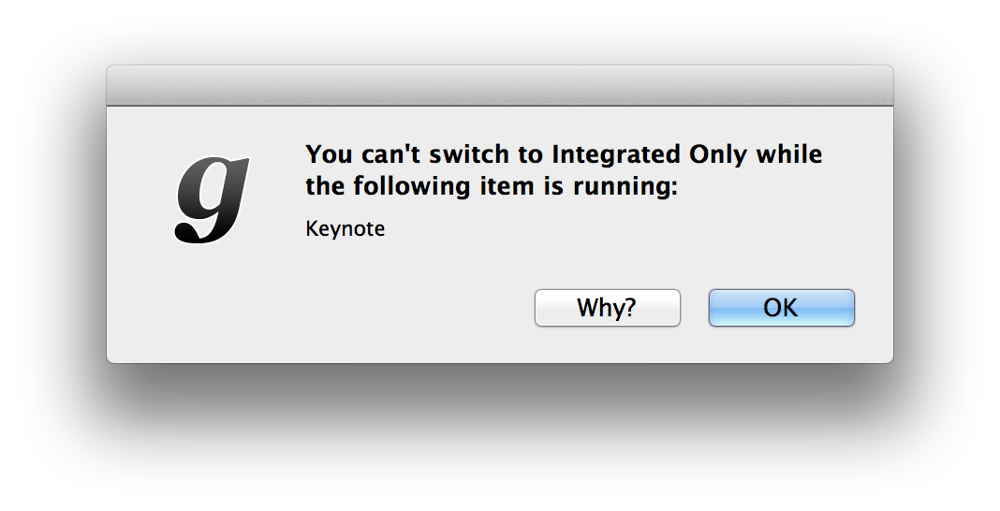

gfxCardStatus has three modes of operation:
For simplicity's sake, it's best to stay on Dynamic Switching, and use gfxCardStatus as a purely informational tool to tell you when apps are affecting your battery life.
If you don't believe a particular app should be causing the more power-hungry graphics to turn on, I encourage you to contact the author of the app directly instead of switching to Integrated Only as a workaround. Tell the author that their app is affecting your battery life, and ask them (calmly) to fix it. If any app authors don't know what the problem is or how to fix it, feel free to tell them to get in touch with me.
gfxCardStatus v2.3 and above actively prevents you from switching to Integrated Only mode when any apps are in the Dependencies list (or if you have an external display plugged in). This is because if you were to do this, your discrete GPU would actually stay powered on, even though you've switched to the integrated GPU.

The message you'll see when attempting to switch to Integrated
Only while Keynote is open.
That's a nasty problem to have, so gfxCardStatus prevents you from switching to Integrated Only while any apps are in the Dependencies list outright.